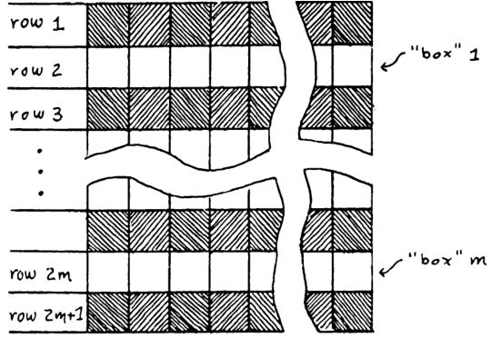

It would seem that Perceptrons has much the same role as The Necronomicon – that is, often cited but never read.
Marvin Minsky, 1994. Quoted in (Berkeley 1997)
Well, you too can read the Necronomicon.
In one sentence, the mathematical portion of the Perceptron book is a theory of two-layered perceptrons, mostly by discrete mathematics. Perceptron representation occupies chapters 0–10, and learning is only studied in chapters 11 and 12.
Setup
Let \(R\) be a finite set, where “R” could be read as “region”, or “rectangle”.
Definition 1 (Perceptron) A perceptron is a binary function of type \(\{0, 1\}^R \to \{0, 1\}\), defined by a weight vector \(w\) and a threshold number \(b\):
\[ \Phi(x) := \theta(w^T x + b) \]
where \(\theta(t) := 1_{t \geq 0}\) is the 0-1 step function.
Definition 2 (perceptron machine) A perceptron machine with \(k\) hidden neurons is a function of type \(\{0, 1\}^R \to \{0, 1\}\), defined by
\[ \Phi(x) := \psi_{k+1}(\psi_1(x), \psi_2(x), \cdots, \psi_k(x)) \]
where \(\psi_1, ..., \psi_k\) are (hidden) perceptrons in the hidden layer, and \(\psi_{k+1}\) is the single output perceptron.
Definition 3 (perceptron orders) The order of a hidden perceptron is the number of nonzero weights.
The order of a perceptron machine is the maximum order of its hidden perceptrons.
The order of a boolean function is the minimum order necessary for a perceptron machine that implements it.
For example, the constant-0 and constant-1 boolean functions are both of order 0.
A key focus of the perceptron controversy is the concept of “conjunctively local”.
Definition 4 (conjunctively local) A family of boolean functions is conjunctively local iff their orders are upper bounded.
Perceptron representation theory
While their definition allows perceptron machines of any real-valued weights and biases, they immediately performed a computational reduction to the special case of mask perceptron machines. Most of the book considers the problem of classifying subsets of families of planar square grids, such as \(\{1, 2, 3\} \times \{1, 2, 3, 4\}\). A subset is inputted to the perceptron machine by setting inputs in the subset to \(1\), and the rest to \(0\). Consequently, it is natural to consider a special case of perceptron machines.
Definition 5 (mask perceptron machine) A mask for \(A\subset R\) is a function of type \(\{0, 1\}^R \to \R\), such that \(\psi(x) = 1\) if \(x_i =1\) for all \(i \in A\), and else \(\psi(x) = 0\).
A mask perceptron machine is a perceptron machine where each hidden perceptron is a mask, and the threshold of the output perceptron is zero. In other words, it is of form
\[ \Phi(x) = \theta\lrb{\sum_{i=1}^k a_i \psi_{A_i}(x)} \]
where each \(\psi_{A_i}\) is a mask, each \(a_i\in \R\), and \(k\) is the number of hidden perceptrons.

Theorem 1 (Theorem 1.5.1) Restricting to mask perceptron machines does not change perceptron orders. That is, any boolean function implemented by a perceptron machine of order \(k\) can be implemented by a mask perceptron machine of order at most \(k\).
Proof. Take one such perceptron machine. The threshold of the output perceptron can be removed by adding a hidden perceptron that always outputs \(1\) – in other words, \(\psi_\emptyset\), the mask of the empty set. Now it remains to decompose each hidden perceptron into masks with the same order, or less.
Let \(\psi\) be a hidden perceptron with nonzero weights on the input points \(x_{i_1}, ..., x_{i_k}\), then its output is determined by the values of \(x_{i_1}, ..., x_{i_k}\). Therefore, we can partition the binary set \(\{0, 1\}^{i_1, ..., i_k}\) into two subsets \(A_0, A_1\), such that for any input \(x\in\{0, 1\}^R\), we have \(\psi(x) = 1\) iff \((x_{i_1}, ..., x_{i_k}) \in A_1\).
In other words, we only need to look at the binary values \(x_{i_1}, ..., x_{i_k}\) to know the binary output \(\psi(x)\).
Therefore, we can replace \(\psi\) with a boolean formula on \(x_{i_1}, ..., x_{i_k}\), then expand it to obtain up to \(2^k\) masks, each of order at most \(k\).
For example, suppose \(\psi\) has nonzero weights on \(x_1, x_2\), and is 1 on all odd-sized subsets, then we can write it as a boolean formula:
\[ \left(x_1 \wedge \neg x_2\right) \vee\left(\neg x_1 \wedge x_2\right) = x_1\left(1-x_2\right)+\left(1-x_1\right) x_2 = x_1 + x_2 - 2 x_1 x_2 \]
The next tool they used is symmetry, formulated in the language of finite group actions.
Let \(S_R\) be the permutation group on the elements of \(R\), and \(G\) be a subgroup of \(S_R\). We say that a boolean function \(\psi\) is \(G\)-invariant iff \(\psi \circ g=\psi\) for any \(g \in G\). That is, any \(X \subset R\), we have \(\psi(X)=\psi(g(X))\). For example, the parity function is \(S_R\)-invariant, since any permutation of the set preserves the size, and thus the parity, of any of its subsets.
Theorem 2 (group invariance theorem) If a boolean function is \(G\)-invariant, where \(G\) is a finite group, then any perceptron machine computing it can be converted to a perceptron machine \(\theta(\sum_i a_i \psi_i)\), such that if \(\psi_i=\psi_j \circ g\) for some \(g \in G\), then \(a_i=a_j\).
Proof. Take the group-action average: any mask \(\psi\) is equal to \(\frac{1}{|G|} \sum_{g\in G} \psi\circ g\).
Once the groundwork is laid, they proceeded to prove a wide variety of theorems on the order of particular boolean functions.
Consider the parity function. It is \(1\) iff exactly an odd number of inputs are \(1\) and the rest are \(0\).
Theorem 3 (Theorem 3.1) The parity function has order \(|R|\).
Proof. Since the parity function is \(S_R\)-invariant, if it is implemented by a perceptron machine of order \(k\), it is implemented by some mask perceptron machine \(\theta(\sum_{A_i \subset R} a_{A_i} \psi_{A_i})\), where each mask is of size \(\leq k\), and each weight \(a_{A_i}\) depends only on the size of \(A_i\). Let \(b_{|A_i|} = a_{A_i}\) be those coefficients. It remains to show \(b_{|R|} \neq 0\).
For each \(X \subset R\), we have by explicit computation
\[ \theta\lrb{\sum_{A_i \subset R} a_{A_i} \psi_{A_i}} = 1\lrs{f(|X|) \geq 0} \]
where \(f(t) := \sum_{i=0}^{|R|}b_i \binom{t}{i}\) is a polynomial in \(t\). Since this perceptron machine implements the parity function, as \(t\) increases from \(0\) to \(|R|\), the function \(f(t) + \epsilon\) must intersect the \(x\)-axis at least \(|R|\) times for some real value \(\epsilon\). Since \(f\) is a polynomial, it must have at least order \(|R|\), thus \(b_{|R|} \neq 0\).
Theorem 4 (Theorem 3.2, one-in-a-box) Let \(A_1, A_2, ..., A_m\) be disjoint subsets of \(R\) each of size \(4 m^2\), and define the predicate \(\psi(X) = \forall i, \left|X \cap A_i\right|>0\), that is, there is at least one point of \(X\) in each \(A_i\). The order of \(\psi\) is \(\geq m\).
Proof. Let the order of \(\psi\) be \(k\).
The predicate \(\psi\) is invariant with respect to the group \(S_{A_1} \times \cdots \times S_{A_m}\), so by the same construction as the proof of Theorem 2, there exists a polynomial \(P(t_1, ..., t_m)\), where \(P\) has order \(k\), and
\[ \forall t_1, ..., t_m \in \{0, 1, ..., 4m^2\}, P(t_1, ..., t_m) < 0 \iff t_1 = 0 \vee \cdots \vee t_m = 0 \]
Now define \(Q(t) := P((t-1)^2, (t-3)^2, \cdots, (t-2m+1)^2)\). By the above equation, \(Q < 0\) at \(t=1, 3, \cdots, 2m - 1\) and \(Q \geq 0\) at \(t = 0, 2, \cdots, 2m\). Thus, \(Q\) has order \(\geq 2m\). Thus, \(2k \geq 2m\).
Theorem 5 (Theorem 4.0) There exist predicates \(\psi_1\) and \(\psi_2\) of order 1 such that \(\psi_1 \wedge \psi_2\) and \(\psi_1 \vee \psi_2\) are not of finite order. Specifically, if we partition \(R\) into three equal subsets \(A, B, C\), then the boolean function does not have bounded order:
\[ (|X \cap A| > |X \cap C|) \wedge (|X \cap B| > |X \cap C|) \]
even though both \(|X \cap A| > |X \cap C|\) and \(|X \cap B| > |X \cap C|\) are of order \(1\).
Proof. \(|X \cap A| > |X \cap C|\) is computed by the order-\(1\) perceptron machine \(\theta\lrb{\sum_{i\in A} x_i - \sum_{i \in C}x_i}\), and similarly for the other one.
To show the composite boolean function is not of bounded order, suppose otherwise, then by the same argument as the previous proof, we can construct a sequence of polynomials \(P_1(a, b, c), P_2(a, b, c), P_3(a, b, c), ...\), such that each \(P_n\) is the polynomial corresponding to the perceptron machine for the case where \(|A| = |B| = |C| = n\), and each of them has order at most \(M\), for some fixed \(M\).
Being the polynomial corresponding to the perceptron machine for the case where \(|A| = |B| = |C| = n\) means precisely that
\[ a > c \wedge b > c \implies P_n(a, b, c) \geq 0; \neg (a > c \wedge b > c) \implies P_n(a, b, c) < 0; \]
for all \(a, b, c \in \{0, 1, ..., n\}\). This implies that each \(P_1, P_2, ... \neq 0\). Now, divide each polynomial by the root-sum-square of its coefficients, so that if we interpret the coefficients of each \(P_n\) as a point in a high-dimensional space, the point falls on the unit sphere in that space. Since the unit sphere is compact, there exists a limit point, which we write as \(P(a, b, c)\).
By the limit construction, we have
\[ \forall a, b, c \in \N, \quad a > c \wedge b > c \implies P(a, b, c) \geq 0; \neg (a > c \wedge b > c) \implies P(a, b, c) \leq 0; \]
If we color the points \(\N^3\) with black for \(P < 0\) and white for \(P \geq 0\), then we can see the dusty outlines of a pyramid. We can construct a solid pyramid by zooming.
Let \(M'\) be the order of \(P\), then we can “zoom out” by taking the projective limit \(Q(a, b, c) := \lim_{t \to \infty} t^{-M'} P(ta, tb, tc)\). This \(Q\) is a homogeneous polynomial, and by continuity,
\[ \forall a, b, c \geq 0, \quad a > c \wedge b > c \implies P(a, b, c) \geq 0; a < c \vee b < c \implies P(a, b, c) \leq 0; \]
This implies that \(P\) is identically zero on the “creased curve” \(\{ a, b, c \geq 0, a = c \vee b = c\}\) in the projective plane, which is not an algebraic curve, therefore it is identically zero, contradiction.
Theorem 6 (Theorem 5.1) The connectedness function has order \(\Omega(|R|^{1/3})\).
Proof. If we have a mask perceptron machine that can solve the connectedness problem, then it can be repurposed1 to solve the one-in-a-box problem of the following kind:
1 Repurposing one machine to solve another problem is a common trick in computational complexity, called “reduction”. For perceptron machines, they called it “Theorem 5.4.1: The Collapsing Theorem”.

In the picture, the rectangle \(R\) has width \(4m^2\) and height \(2m+1\). We fill in all the odd-numbered rows, and use the machine to solve the one-in-a-box problem for the even-numbered rows. By Theorem 4, the machine has order \(\geq m = \Omega(|R|^{1/3})\).
More generally, the only locally conjunctive topological invariant is the Euler number \(E\) (Theorem 5.9). That is, if \(\psi\) is a boolean function, and it depends only on the topology of the input figure, and its order is upper-bounded by some number \(k\) that does not grow even as \(R\) grows into a larger and larger rectangle, then \(\psi\) is of form \(f \circ E\), for some function \(f: \N \to 2\).
The Euler number itself is \(E(X) = \sum_{i \in R} x_i - \sum_{i,j \in R} x_ix_j + \sum_{i,j,k, l \in R} x_ix_jx_kx_l\), where the \(i,j\in R\) ranges only over adjacent points, and \(i,j,k, l \in R\) ranges only over quadruples that form a square. Thus the Euler number itself has order \(4\) (Theorem 5.8.1).
Chapters 6–9 continue in the same style, but moves to the case where the input space is made of one or two copies of the infinite line \(\Z\), or the infinite plane \(\Z^2\), and the predicate to recognize is still translation-invariant. In order to avoid blowing up the perceptron machine with infinities, they restricted to the case where the input figure is of finite size, meaning that \(\sum_i x_i\) is finite.
Chapter 6 develops the idea of “spectra” of images. For example, the following picture shows that if we were to design a perceptron machine using only masks of size up to 2, and translation-invariant weights, then it cannot possibly distinguish between the two tetris-like pieces, because both figures contain exactly 4 instances of single-square, 1 instance of two squares side by side, and so on.

Sections 6.1–6.5 of the chapter studies the same idea for masks of size up to 4. For example, Section 6.4 shows that “\(X\) is the perimeter of a complete circle” is of order \(4\).
Section 6.6 claims that “recognizing figures in context” is generally not locally conjunctive, although they gave only two examples. Specifically, they showed that the predicate “\(X\) is a horizontal line across the rectangle” is order 2, the predicate “\(X\)$ contains one horizontal line across plane” is not locally conjunctive. The same is true for the case with “a hollow square” instead of “a horizontal line”.
Chapter 7 uses the “stratification” construction to explicitly demonstrate that several binocular predicates are of finite order, but requires exponentially growing weights. It is essentially the same idea as Gödel numbering. A single illustrative example suffices to demonstrate the general point.
Example 1 Given a line \(\Z\), how to construct a perceptron machine that detects that input figure is symmetric?
Suppose we know for certain that the input figure has leftmost point \(m\) and rightmost point \(n\), then we can test for symmetry by computing the value of:
\[ f_{m, n}(x) := \sum_{i = 0}^{n-m} x_{m+i}(x_{n-i} - 1) \]
We have that \(f_{m, n}(x) = 0\) if the figure is symmetric, and \(f_{m, n}(x) \leq -1\) otherwise.
Now we define the entire perceptron machine by \(\sum_{m \leq n} M_{n - m} x_m x_n (f_{m, n}(x) - 1/2)\). If the sequence of \(M_0, M_1, ...\) grows as \((d!)^2\) roughly 2, then the largest bracket \((m, n)\) would “veto” every smaller bracket contained within, and so the entire perceptron machine is effectively first testing for the smallest interval containing the figure, before testing the symmetry within that interval.
2 Expanding term by term, we have \(|(f_{m, n}(x) - 1/2)| \leq 2(n-m) + \frac 12\). Therefore, in order for \(M_d\) to “veto” every other bracket within, we need
\[ M_d \frac 12 > \sum_{d' = 1}^{d-1} \lrb{M_{d'}(\frac 12 + 2d')(d-d' + 1)} \]
Here \(d\) should be read as “distance between two ends of a bracket”.
To bound the growth rate, we bound the recurrence relation \(M_d = \sum_{d' = 1}^{d-1} \lrb{M_{d'}(4d' + 1)(d-d' + 1)}\). The sum on the right is bounded by
\[ \sum_{d' = 1}^{d-1} \lrb{M_{d'}(4d' + 1)(d-d' + 1)} \in \Theta{\lrs{ \sum_{d' = 1}^{d-1} \lrb{M_{d'}d'}, d^2\sum_{d' = 1}^{d-1} \lrb{M_{d'}}}} \]
The lower bound implies \(M_d = \Omega((d!)^2 \times d^{-1})\) and upper bound implies \(M_d = O((d!)^2 \times (d+1)^2)\).
They made similar constructions for perceptron machines that decide whether two infinite lines or planes are translates of each other, whether two planes are translation and approximate dilations of each other, and whether a line or a plane is the translation of a fixed figure.
Chapter 8 studies diameter-limited perceptron machines, meaning that not only are the hidden perceptrons assumed to be masks of bounded size, those masks are assumed to be contained in a circle of radius \(M\) for some finite \(M\). It is intended to be a formalization of the intuition that the perceptron machines should model a real pair of eyes scanning a plane, and each retina is a circular disk with finite radius. No results in chapter 8 were used further in the book, and they resemble the case of finite-order perceptron machines, so we do not discuss the results in detail.
Chapter 9 shows that the connectedness problem is easy to solve using small serial programs, a contrast to the case of perceptron machines. They designed a robot that moves around the plane, and can solve the connectedness problem, with a memory size of just two. Namely, it only need to store up to two locations \((x, y), (x', y')\) in its memory during its operation, and it eventually halts in one of three states “empty”, “connected”, and “disconnected”. They then described a few other more exotic computational models. The whole thing is in the same style of solving interesting puzzles in computational complexity, similar to (Minsky 1967). The overarching goal is to demonstrate that connectedness is “inherently serial”.
Whereas in the construction Example 1, we saw coefficients growing exponentially on an infinite plane, chapter 10 finitizes that this.
Example 2 (Theorem 10.1) Suppose we have a perceptron machine that tests for parity, then by Theorem 3, it must have order \(|R|\). As in the construction given in the proof, we use the group invariance theorem to obtain a group-symmetric machine with form \(\theta(\sum_{i=0}^{|R|}\binom{|X|}{i} b_i)\), where \(b_0, b_1, ..., b_{|R|}\) are real numbers. Then, assuming the machine is “reliable”, we can prove that \((-1)^{M} b_{M+1 \geq 2^{M}\) for any \(M \in \{0, 1, \cdots, |R|-1\}\).
Since the group-symmetric construction can only average out the most extreme values, this implies that before the group-symmetric construction, our perceptron machine had even more extreme coefficients.
A “reliable” machine is a support vector machine with margin \(\geq 1/2\). That is, it is a machine such that \[ \sum_{i=0}^{|R|}\binom{|X|}{i} b_i \begin{cases} \geq 1 & \text{ if $|X|$ is odd} \leq 0 & \text{ if $|X|$ is even} \end{cases} \]
Proof. Define \(A_n = \sum_{i=0}^n \binom{n}{i}b_i\). Since the machine is reliable, we have that \((-1)^{n}(A_{n+1} - A_n) \geq 1\) for each \(n = 0, 1, ..., |R|-1\). Simplifying the binomial coefficients, we have \(A_{n+1} - A_n = \sum_i \binom{n}{i} b_{i+1}\). Note that we use the convenient convention that \(\binom{x}{y} = 0\) if \(x < y\).
Now fix any \(M \in \{0, 1, \cdots, |R|-1\}\), and evaluate the following inequality:
\[ 2^{M} = \sum_n \binom{M}{n} \cdot 1 \leq \sum_n \binom{M}{n} (-1)^{n}(A_{n+1} - A_n) \]
By manipulating the binomial coefficients, the right side simplifies to \((-1)^M b_{M+1}\).
Section 10.2 and 10.3 constructs two pathological examples. By restricting the shapes of hidden perceptron masks, they proved that certain predicates required superexponential weights. Section 10.4 purports to extend the group invariance theorem to the infinite case.3 None of these are used elsewhere in the book. They are virtuoso performances. However, they interpreted this as a serious problem:
3 They purported to show in Theorem 10.4.1 that, if the weights are bounded, then the group invariance theorem applies again, but the proof is false, with a counterexample being \(\sum_{n \in \Z}e^{-n^2}x_n - e^{-n^4}x_nx_{n+1}\). The theorem might still be correct with another proof, but I cannot find one.
A proof, in Chapter 10, that coefficients can grow much faster than exponentially with \(|R|\) has serious consequences both practically and conceptually: the use of more memory capacity to store the coefficients than to list all the figures strains the idea that the machine is making some kind of abstraction
Perceptron learning theory
In Chapter 11, they finally start discussing perceptron learning, which is of a very restrictive form.
Definition 6 (Perceptron learning) To train a perceptron machine is to fix its hidden perceptrons, and adjust the weights and threshold of only the single output perceptron by the perceptron learning rule. For this chapter, it is cleaner to change the convention, so that each perceptron outputs \(-1, +1\), instead of \(0, 1\).
Since only the output perceptron is adapted, it suffices to discuss the case where there are no hidden perceptrons, and we only need to adapt the weights of a single perceptron. That is, we have a dataset \(D\), and we sample some \((x, y) \in D\), and verify that \(y = \theta(\braket{w, x})\).
If this is true for all \((x, y) \in D\), then the perceptron learning has converged. Otherwise, we update \(w\) by \(w \leftarrow w + \alpha y x\), where \(\alpha > 0\) is the learning rate.
Definition 7 (Perceptron learning theorem) Let \(D\) be a dataset, with radius \(R = \max_{(x, y) \in D} \|x\|\). If there exists some unit \(w^*\) such that \(\gamma = \min_{(x, y) \in D} y\braket{w^*, x}\), then the perceptron learning algorithm converges after making at most \((R/\gamma)^2\) updates.
Proof. By linearity of the learning rule, we can deal only with the case where \(\alpha = 1\).
By multiplying each \(x\) with its \(y\), we can deal only with the case where all \(y = +1\).
By rotating and scaling the space, we can deal only with the case where \(w^* = (1, 0, \cdots, 0)\), and \(\gamma = 1\).
Now, each weight update increases the first coordinate of \(w\) by at least \(1\), so after \(n\) updates, \(\|w\| \geq n\). However, each weight update of \(w \leftarrow w + x\) uses a vector \(x\) that is pointing at a direction perpendicular to \(w\), or worse, pointing against \(w\). Therefore, by Pythagorean theorem, \(\|w\|^2\) increases by at most \(\|x\|^2 \leq R^2\). So after \(n\) updates, \(\|w\|^2 \leq nR^2\).
Combining the two results we have \(n \leq R^2\).
Modifying the proof slightly, and applying the conclusion of Example 2, we find that starting with the zero weight vector, it takes at least \(2^{|R|}/|R|\) steps steps to learn the parity function.
They then gestured that gradient descent is just a somewhat more efficient perceptron learning rule, and cannot escape local optima. No “local learning rule” can escape local optima, unlike symbolic programs that are provably capable of finding global optima.
If the dataset is not linearly separable, then the perceptron weight would not converge. However, the perceptron cycling theorem shows that if the dataset is finite, then the perceptron weight would still be trapped within a large but finite disk, no matter how the dataset is sampled.
Chapter 12 sketches other algorithms for learning (approximate) binary classification algorithms, including naive Bayes, nearest neighbor, ISODATA, a hack used by Arthur Samuel’s checker program, etc. Section 12.6 and 12.7 study the time-space tradeoff using variations on a toy problem: given a subset of \(\{0, 1\}^n\), decide whether a \(n\)-bit word is in it or not.